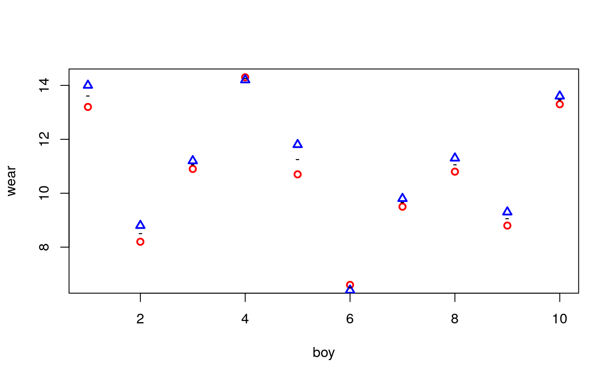

vignettes/Intro_pbkrtest.Rmd
Intro_pbkrtest.Rmd
The data is a list of two vectors, giving the wear of shoes of materials A and B for one foot each of ten boys.
data(shoes, package="MASS")
shoes$A
[1] 13.2 8.2 10.9 14.3 10.7 6.6 9.5 10.8 8.8 13.3
$B
[1] 14.0 8.8 11.2 14.2 11.8 6.4 9.8 11.3 9.3 13.6A plot clearly reveals that boys wear their shoes differently.
plot(A~1, data=shoes, col="red",lwd=2, pch=1, ylab="wear", xlab="boy")
points(B~1, data=shoes, col="blue", lwd=2, pch=2)
points(I((A+B)/2)~1, data=shoes, pch="-", lwd=2)
One option for testing the effect of materials is to make a paired \(t\)–test. The following forms are equivalent:
Paired t-test
data: shoes$A and shoes$B
t = -3.3489, df = 9, p-value = 0.008539
alternative hypothesis: true difference in means is not equal to 0
95 percent confidence interval:
-0.6869539 -0.1330461
sample estimates:
mean of the differences
-0.41 To work with data in a mixed model setting we create a dataframe, and for later use we also create an imbalanced version of data:
boy <- rep(1:10,2)
boyf<- factor(letters[boy])
mat <- factor(c(rep("A", 10), rep("B",10)))
## Balanced data:
shoe.b <- data.frame(wear=unlist(shoes), boy=boy, boyf=boyf, mat=mat)
head(shoe.b) wear boy boyf mat
A1 13.2 1 a A
A2 8.2 2 b A
A3 10.9 3 c A
A4 14.3 4 d A
A5 10.7 5 e A
A6 6.6 6 f A## Imbalanced data; delete (boy=1, mat=1) and (boy=2, mat=b)
shoe.i <- shoe.b[-c(1,12),]We fit models to the two datasets:
lmm1.b <- lmer( wear ~ mat + (1|boyf), data=shoe.b )
lmm0.b <- update( lmm1.b, .~. - mat)
lmm1.i <- lmer( wear ~ mat + (1|boyf), data=shoe.i )
lmm0.i <- update(lmm1.i, .~. - mat)The asymptotic likelihood ratio test shows stronger significance than the \(t\)–test:
anova( lmm1.b, lmm0.b, test="Chisq" ) ## Balanced datarefitting model(s) with ML (instead of REML)Data: shoe.b
Models:
lmm0.b: wear ~ (1 | boyf)
lmm1.b: wear ~ mat + (1 | boyf)
Df AIC BIC logLik deviance Chisq Chi Df Pr(>Chisq)
lmm0.b 3 67.909 70.896 -30.955 61.909
lmm1.b 4 61.817 65.800 -26.909 53.817 8.092 1 0.004446 **
---
Signif. codes: 0 '***' 0.001 '**' 0.01 '*' 0.05 '.' 0.1 ' ' 1anova( lmm1.i, lmm0.i, test="Chisq" ) ## Imbalanced datarefitting model(s) with ML (instead of REML)Data: shoe.i
Models:
lmm0.i: wear ~ (1 | boyf)
lmm1.i: wear ~ mat + (1 | boyf)
Df AIC BIC logLik deviance Chisq Chi Df Pr(>Chisq)
lmm0.i 3 63.869 66.540 -28.934 57.869
lmm1.i 4 60.777 64.339 -26.389 52.777 5.092 1 0.02404 *
---
Signif. codes: 0 '***' 0.001 '**' 0.01 '*' 0.05 '.' 0.1 ' ' 1The Kenward–Roger approximation is exact for the balanced data in the sense that it produces the same result as the paired \(t\)–test.
( kr.b<-KRmodcomp(lmm1.b, lmm0.b) )F-test with Kenward-Roger approximation; time: 0.11 sec
large : wear ~ mat + (1 | boyf)
small : wear ~ (1 | boyf)
stat ndf ddf F.scaling p.value
Ftest 11.215 1.000 9.000 1 0.008539 **
---
Signif. codes: 0 '***' 0.001 '**' 0.01 '*' 0.05 '.' 0.1 ' ' 1summary(kr.b)F-test with Kenward-Roger approximation; time: 0.11 sec
large : wear ~ mat + (1 | boyf)
small : wear ~ (1 | boyf)
stat ndf ddf F.scaling p.value
Ftest 11.215 1.000 9.000 1 0.008539 **
FtestU 11.215 1.000 9.000 0.008539 **
---
Signif. codes: 0 '***' 0.001 '**' 0.01 '*' 0.05 '.' 0.1 ' ' 1Relevant information can be retrieved with
getKR(kr.b, "ddf")[1] 9For the imbalanced data we get
(kr.i<-KRmodcomp(lmm1.i, lmm0.i))F-test with Kenward-Roger approximation; time: 0.03 sec
large : wear ~ mat + (1 | boyf)
small : wear ~ (1 | boyf)
stat ndf ddf F.scaling p.value
Ftest 5.9893 1.0000 7.0219 1 0.04418 *
---
Signif. codes: 0 '***' 0.001 '**' 0.01 '*' 0.05 '.' 0.1 ' ' 1Notice that this result is similar to but not identical to the paired \(t\)–test when the two relevant boys are removed:
Paired t-test
data: shoes2$A and shoes2$B
t = -2.3878, df = 7, p-value = 0.04832
alternative hypothesis: true difference in means is not equal to 0
95 percent confidence interval:
-0.671721705 -0.003278295
sample estimates:
mean of the differences
-0.3375 Parametric bootstrap provides an alternative but many simulations are often needed to provide credible results (also many more than shown here; in this connection it can be useful to exploit that computings can be made en parallel, see the documentation):
(pb.b <- PBmodcomp(lmm1.b, lmm0.b, nsim=500, cl=2) )Bootstrap test; time: 4.15 sec;samples: 500; extremes: 3;
large : wear ~ mat + (1 | boyf)
small : wear ~ (1 | boyf)
stat df p.value
LRT 8.1197 1 0.004379 **
PBtest 8.1197 0.007984 **
---
Signif. codes: 0 '***' 0.001 '**' 0.01 '*' 0.05 '.' 0.1 ' ' 1summary( pb.b )Bootstrap test; time: 4.15 sec;samples: 500; extremes: 3;
large : wear ~ mat + (1 | boyf)
small : wear ~ (1 | boyf)
stat df ddf p.value
LRT 8.1197 1.0000 0.004379 **
PBtest 8.1197 0.007984 **
Gamma 8.1197 0.009085 **
Bartlett 6.6908 1.0000 0.009691 **
F 8.1197 1.0000 11.364 0.015354 *
---
Signif. codes: 0 '***' 0.001 '**' 0.01 '*' 0.05 '.' 0.1 ' ' 1For the imbalanced data, the result is similar to the result from the paired \(t\) test.
(pb.i<-PBmodcomp(lmm1.i, lmm0.i, nsim=500, cl=2))Bootstrap test; time: 4.34 sec;samples: 500; extremes: 27;
large : wear ~ mat + (1 | boyf)
small : wear ~ (1 | boyf)
stat df p.value
LRT 5.1151 1 0.02372 *
PBtest 5.1151 0.05589 .
---
Signif. codes: 0 '***' 0.001 '**' 0.01 '*' 0.05 '.' 0.1 ' ' 1summary(pb.i)Bootstrap test; time: 4.34 sec;samples: 500; extremes: 27;
large : wear ~ mat + (1 | boyf)
small : wear ~ (1 | boyf)
stat df ddf p.value
LRT 5.1151 1.0000 0.02372 *
PBtest 5.1151 0.05589 .
Gamma 5.1151 0.04808 *
Bartlett 4.0027 1.0000 0.04543 *
F 5.1151 1.0000 9.1965 0.04944 *
---
Signif. codes: 0 '***' 0.001 '**' 0.01 '*' 0.05 '.' 0.1 ' ' 1The matrices involved in the random effects can be obtained with
shoe3 <- subset(shoe.b, boy<=5)
shoe3 <- shoe3[order(shoe3$boy), ]
lmm1 <- lmer( wear ~ mat + (1|boyf), data=shoe3 )
str( SG <- get_SigmaG( lmm1 ), max=2)List of 3
$ Sigma :Formal class 'dgCMatrix' [package "Matrix"] with 6 slots
$ G :List of 2
..$ :Formal class 'dgCMatrix' [package "Matrix"] with 6 slots
..$ :Formal class 'dgCMatrix' [package "Matrix"] with 6 slots
$ n.ggamma: int 2round( SG$Sigma*10 )10 x 10 sparse Matrix of class "dgCMatrix" [[ suppressing 10 column names 'A1', 'B1', 'A2' ... ]]
A1 53 52 . . . . . . . .
B1 52 53 . . . . . . . .
A2 . . 53 52 . . . . . .
B2 . . 52 53 . . . . . .
A3 . . . . 53 52 . . . .
B3 . . . . 52 53 . . . .
A4 . . . . . . 53 52 . .
B4 . . . . . . 52 53 . .
A5 . . . . . . . . 53 52
B5 . . . . . . . . 52 53[[1]]
10 x 10 sparse Matrix of class "dgCMatrix" [[ suppressing 10 column names 'A1', 'B1', 'A2' ... ]]
A1 1 1 . . . . . . . .
B1 1 1 . . . . . . . .
A2 . . 1 1 . . . . . .
B2 . . 1 1 . . . . . .
A3 . . . . 1 1 . . . .
B3 . . . . 1 1 . . . .
A4 . . . . . . 1 1 . .
B4 . . . . . . 1 1 . .
A5 . . . . . . . . 1 1
B5 . . . . . . . . 1 1
[[2]]
10 x 10 sparse Matrix of class "dgCMatrix"
[1,] 1 . . . . . . . . .
[2,] . 1 . . . . . . . .
[3,] . . 1 . . . . . . .
[4,] . . . 1 . . . . . .
[5,] . . . . 1 . . . . .
[6,] . . . . . 1 . . . .
[7,] . . . . . . 1 . . .
[8,] . . . . . . . 1 . .
[9,] . . . . . . . . 1 .
[10,] . . . . . . . . . 1